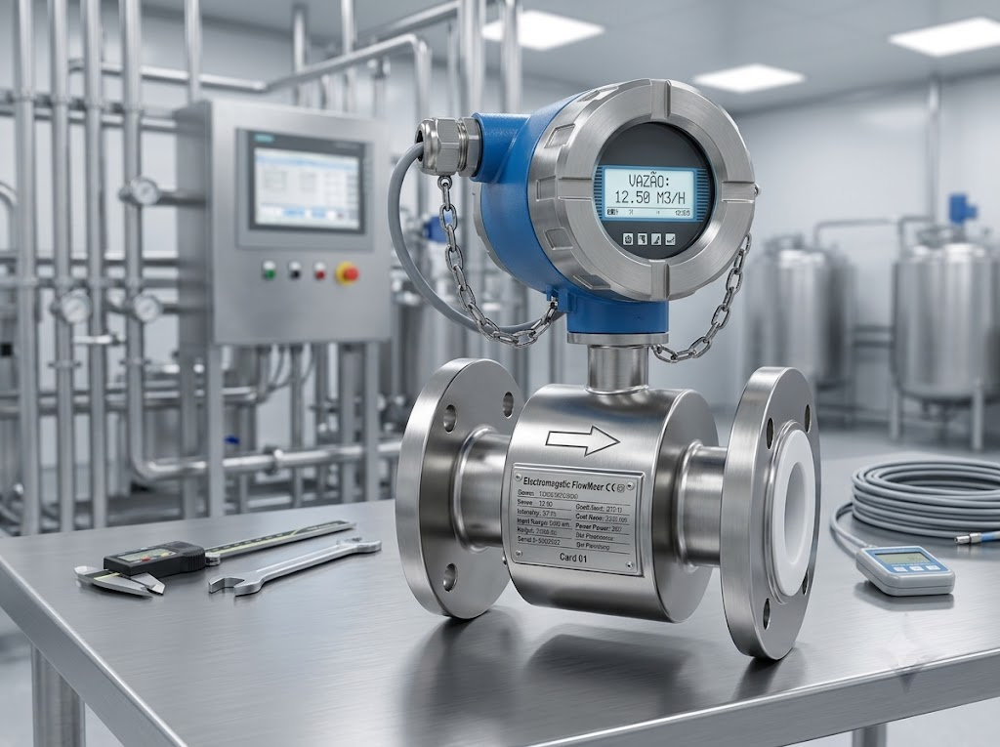
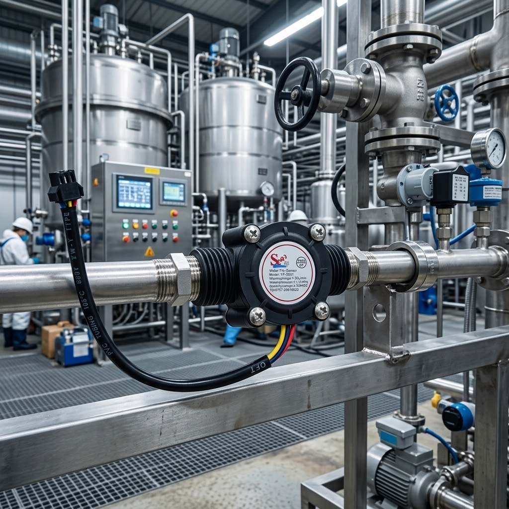
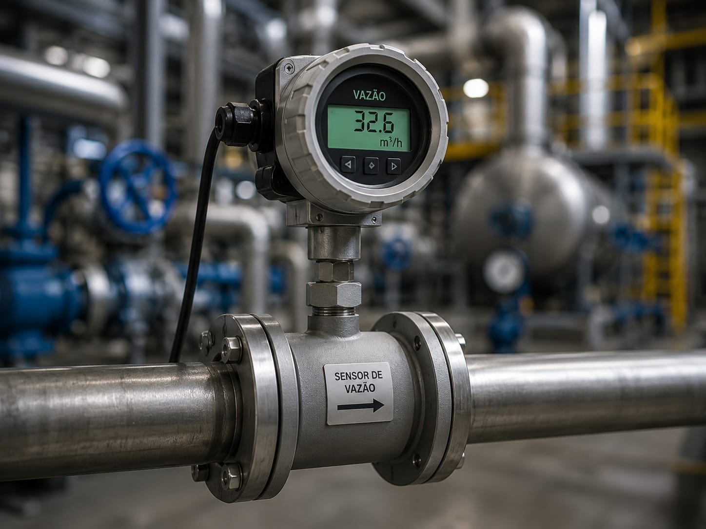

Vazão
Dispositivo que mede a quantidade de líquido, gás ou vapor que passa por uma tubulação em um determinado intervalo de tempo, garantindo o controle preciso de processos.

Conceito e Aplicação
O sensor de vazão é um instrumento fundamental para medir o fluxo de fluidos em tubulações e dutos industriais. Existem diversas tecnologias de medição, como eletromagnética, ultrassônica, turbina, Coriolis e pressão diferencial, cada uma adequada a diferentes tipos de fluidos, viscosidades e condições de operação.
- Distribuição de água tratada;
- Dosagem de ingredientes na indústria alimentícia;
- Monitoramento de vapor em caldeiras;
- Controle de gases em laboratórios e hospitais.
Informações Complementares

Funcionamento
Mede o fluxo de fluidos por diferentes princípios como eletromagnético, ultrassônico, turbina ou pressão diferencial, convertendo a vazão em sinal elétrico.
Saiba Mais
Aplicações
Distribuição de água, dosagem na indústria alimentícia, monitoramento de vapor em caldeiras e controle de gases medicinais em hospitais
Saiba Mais
Vantagens
Alta precisão, medição em tempo real, variedade de tecnologias para diferentes fluidos e integração com sistemas de controle industrial.
Saiba MaisEmpresas
As principais empresas que fabricam sensores de vazão são líderes globais em instrumentação e medição de fluidos. Em 2025, destacam-se pela precisão, variedade de tecnologias e presença nos setores industriais mais exigentes do mundo.
A Endress+Hauser, a Emerson e a Yokogawa estão entre as maiores fabricantes de sensores de vazão do mundo. Seus medidores eletromagnéticos, Coriolis, ultrassônicos e de pressão diferencial são referência em indústrias como petróleo e gás, química, alimentos e saneamento.
ENDRESS+HAUSER: Líder global em instrumentação de processos, oferece a mais completa linha de medidores de vazão do mercado. Reconhecida pela tecnologia Coriolis e eletromagnética de alta precisão, atende setores críticos com certificações internacionais rigorosas.
EMERSON: Gigante americana da automação, proprietária das marcas Rosemount e Micro Motion. Seus medidores de vazão Coriolis e ultrassônicos são padrão de excelência na indústria de petróleo e gás, com confiabilidade em aplicações de transferência de custódia.
YOKOGAWA: Multinacional japonesa referência em medição de vazão, pioneira na tecnologia de medidores eletromagnéticos. Seus instrumentos combinam precisão, durabilidade e fácil manutenção, sendo amplamente utilizados nas indústrias química e farmacêutica.